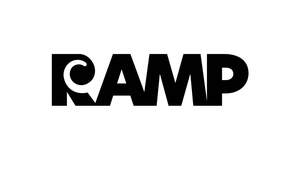

Trade Mark Journal No.2026/007 13 February 2026
UK00004331260 28 January 2026 (42)

- Class 42
- Product testing; product safety testing; materials testing; testing of materials; product quality testing; safety testing of products; packaging design; design of packaging; design and testing of new products; consumer product safety testing; materials testing and evaluation; laboratory testing of materials; product safety testing services; material testing; testing (material -); design and testing for new product development; new products (testing of -); quality testing; product quality control testing; designing of packaging and wrapping materials; packaging designs; engineering testing; design services (packaging -); design services for packaging; packaging design services; quality testing of products for certification purposes; product quality testing services; industrial testing; development of testing methods; laboratory testing services; environmental testing; materials testing and analysing; development of measuring and testing methods; material testing services; testing of apparatus; quality checking and testing; technical testing; environmental testing and inspection services; packaging design for others; chemical analysis services for use in the testing of material; services for the development of methods of testing; industrial packaging design services; consultancy relating to the design of packaging; design services relating to packaging; product research and development; product research and development, relating to packaging; research and development services; environmental testing and inspection services relating to packaging and wrapping materials; testing of packaging and wrapping materials; product testing, namely testing of packaging and wrapping materials; product testing, namely testing of packaging and wrapping materials with insulating properties; product testing, namely testing of biodegradable packaging and wrapping materials; product testing, namely testing of thermal insulating materials; information, consultancy and advisory services relating to all of the aforesaid services.
The Wool Packaging Company (Holdings) Limited
Representative: Swindell & Pearson Limited